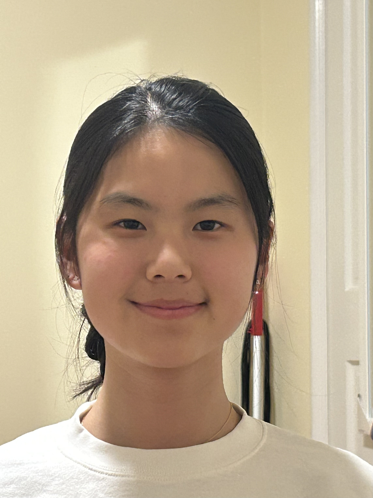

Back to Home
Project 0: Becoming Friends with Your Camera
Part 1: Selfie: The Wrong Way vs. The Right Way
Selfie close up not zoomed in

Selfie further away zoomed in
Part 2: Architectural Perspective Compression
Path further away zoomed in
Path closer up not zoomed in
Part 3: The Dolly Zoom
Dolly Zoom of my stuffed animal cow